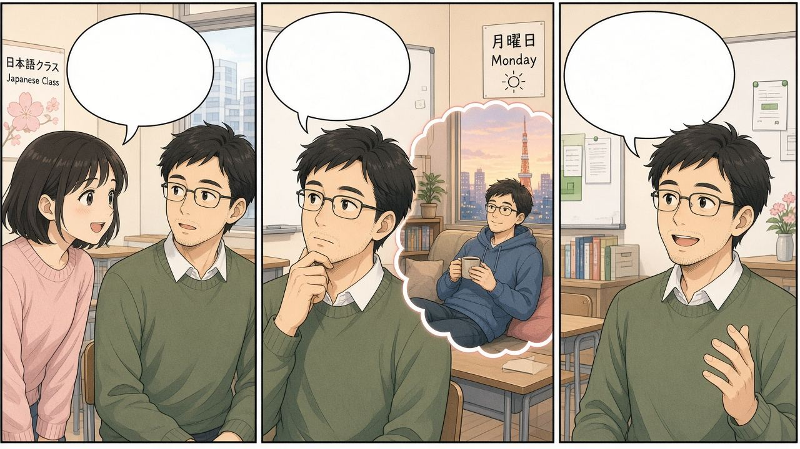
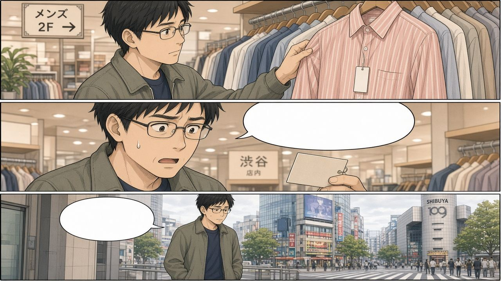
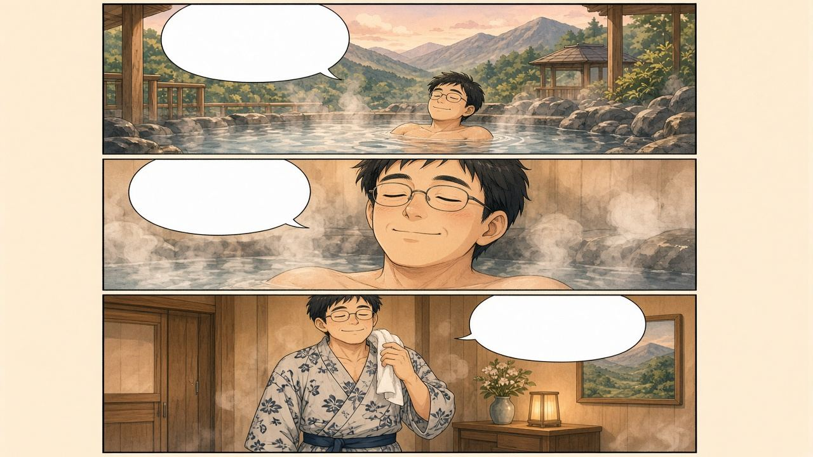
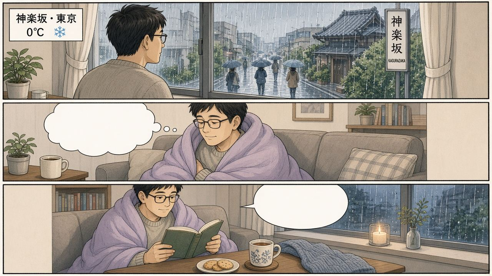
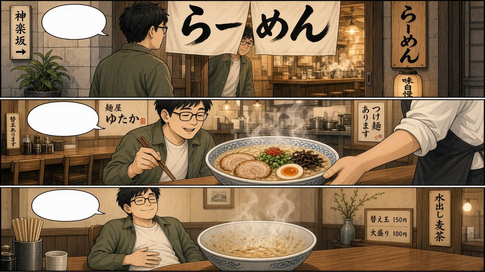
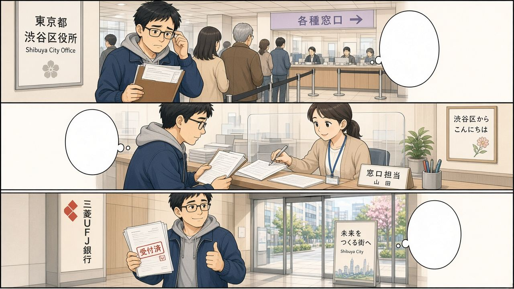

10/28 第5課「休みの後で」ST2
今天辛苦了！一句話重點：い形容詞過去＝〜かったです／〜くなかったです；な・名詞＝〜でした／〜じゃありませんでした；問感想 〜はどうでしたか；講原因 〜から。特別記：いい → よかった／よくなかった（不是 いかった）。
漫畫複習：主角在東京的一週
主角是一位剛搬到東京・神樂坂附近、來語言學校讀書的 37 歲中國男生（頁面上只叫「我／主角」，不是任何人的肖像）。每一格對應今天的文法；氣泡裡的字可能糊掉，請看圖下的日語列。
① 星期一在教室：週末怎麼樣？

課堂上的同學問「週末怎麼樣」，主角回想週末在家休息，然後回答。
週末はどうでしたか。 | shuumatsu wa dou deshitaka. | 週末怎麼樣？ | sp=同學
楽しかったです。 | tanoshikatta desu. | 很好玩／很開心。 | sp=我
うちで休みました。よかったです。 | uchi de yasumimashita. yokatta desu. | 在家休息了，感覺很好。 | sp=我
生活中怎麼用：星期一早上用「週末はどうでしたか」開場，比「何をしましたか」更問「感想」。
② 澀谷買衣服：太貴了所以沒買

主角在澀谷百貨看中一件衣服，一看價錢嚇到，最後兩手空空離開。
この服はどうですか。 | kono fuku wa dou desuka. | 這件衣服怎麼樣？ | sp=我
高かったです。 | takakatta desu. | 很貴。 | sp=我
どうして買いませんでしたか。 | doushite kaimasen deshitaka. | 為什麼沒買？ | sp=同學
高かったですから、買いませんでした。 | takakatta desu kara, kaimasen deshita. | 因為太貴了，所以沒買。 | sp=我
生活中怎麼用：「どうして〜ませんでしたか？」→「〜かった／〜でした＋ですから」。
③ 溫泉旅行：気持ちがよかったです

周末去泡露天溫泉，泡完穿浴衣，整個人鬆下來。
温泉に入りました。 | onsen ni hairimashita. | 泡了溫泉。 | say=おんせんにはいりました。
気持ちがよかったです。 | kimochi ga yokatta desu. | 感覺很舒服。
とても楽しかったです。 | totemo tanoshikatta desu. | 非常開心。
生活中怎麼用：気持ちがいい → 過去一定是 よかった（跟 いい 走），不要說 いかった。
④ 神樂坂下雨天：哪裡都沒去

窗外大雨又冷，主角決定窩在沙發看書喝茶。
昨日は雨でした。 | kinou wa ame deshita. | 昨天下雨。
寒かったです。 | samukatta desu. | 很冷。
雨でしたから、どこへも行きませんでした。 | ame deshita kara, doko e mo ikimasen deshita. | 因為下雨，哪裡都沒去。
うちで本を読みました。静かでした。 | uchi de hon o yomimashita. shizuka deshita. | 在家看書，很安靜。
生活中怎麼用：名詞「雨でした」＋「から」接結果；「どこへも」後面一定要否定。
⑤ 神樂坂拉麵：おいしかったです

鑽進暖暖的拉麵店，一碗下肚，心滿意足。
ラーメンを食べました。 | ra-men o tabemashita. | 吃了拉麵。
おいしかったです。 | oishikatta desu. | 很好吃。
お店はにぎやかでした。 | omise wa nigiyaka deshita. | 店裡很熱鬧。
生活中怎麼用：吃完馬上說「おいしかったです」；店的氣氛用な形容詞「にぎやかでした」。
⑥ 辦生活手續：大変でしたが、親切でした

剛到東京去區公所／銀行排隊填表，手續很多，但窗口的人很親切，辦完比讚。
区役所へ行きました。 | kuyakusho e ikimashita. | 去了區公所。 | say=くやくしょへいきました。
大変でした。 | taihen deshita. | 很辛苦。
でも、店員は親切でした。 | demo, ten'in wa shinsetsu deshita. | 但是店員／櫃檯很親切。
大変でしたが、よかったです。 | taihen deshita ga, yokatta desu. | 雖然辛苦，但還好（辦完了）。
生活中怎麼用：「大変でした」講過程辛苦；「親切でした」講人；結尾可用「よかったです」收。
今天的單字
いそがしい | 忙しい | isogashii | 忙碌 | 粵：忙到「sor」酸
おもしろい | おもしろい | omoshiroi | 有趣／好笑 | EN: oh-mo-shi-roi fun
きもちがいい | 気持ちがいい | kimochi ga ii | 舒服 | EN: kimochi feels good
たかい | 高い | takai | 貴／高 | 普：太貴
やすい | 安い | yasui | 便宜 | 普：壓歲＝便宜
たのしい | 楽しい | tanoshii | 開心、好玩 | 粵：好玩
むずかしい | 難しい | muzukashii | 難
かんたん | 簡単（な） | kantan | 簡單 | な形容詞
たいへん | 大変（な） | taihen | 辛苦 | 手寫：辛苦
ひま | 暇（な） | hima | 有空、閒 | 普：很嘛閒
どうして | どうして | doushite | 為什麼 | ＝なぜ
記法
- 粵忙しい ← 忙到「sor」；楽しい ←「好玩」拖長。
- 普高い ←「太貴」；安い ←「壓歲」；暇 ←「很嘛（閒）」。
- EN気持ちがいい ← “kimochi feels good”；どうして ← “do-she ask why”。
- 泰い 形容詞像以 -い 結尾；な 要加 な 再接名詞。
い形容詞過去：〜かった／〜くなかった
老師：「いをさよならして、かったですを付けます。」拿掉最後的 い，加 かったです。否定：くなかったです。
| 現在 | 過去 | 現在否定 | 過去否定 |
|---|
| 高いです | 高かったです | 高くないです | 高くなかったです |
| 暑いです | 暑かったです | 暑くないです | 暑くなかったです |
| 忙しいです | 忙しかったです | 忙しくないです | 忙しくなかったです |
| 楽しいです | 楽しかったです | 楽しくないです | 楽しくなかったです |
今朝は寒かったです。 | kesa wa samukatta desu. | 今天早上很冷。 | say=けさはさむかったです。
この本は高かったです。 | kono hon wa takakatta desu. | 這本書很貴。
昨日は暑かったです。 | kinou wa atsukatta desu. | 昨天很熱。
デパートは人が多かったです。 | depa-to wa hito ga ookatta desu. | 百貨公司人很多。 | say=デパートはひとがおおかったです。
この靴は安かったです。 | kono kutsu wa yasukatta desu. | 這雙鞋很便宜。 | say=このくつはやすかったです。
おとといは忙しかったです。 | ototoi wa isogashikatta desu. | 前天很忙。
パーティーは楽しくなかったです。 | pa-ti- wa tanoshiku nakatta desu. | 派對並不好玩。 | say=パーティーはたのしくなかったです。
テストは難しくなかったです。 | tesuto wa muzukashiku nakatta desu. | 考試不難。
特別：いい → よかった／よくなかった
老師反覆說：「買ったですではなく、良かったです」。✗いかった → ✓よかった。気持ちがいい 也跟 いい 走。
天気がよかったです。 | tenki ga yokatta desu. | 天氣很好。
天気がよくなかったです。 | tenki ga yoku nakatta desu. | 天氣不好。
気持ちがよかったです。 | kimochi ga yokatta desu. | 感覺很舒服。
気持ちがよくなかったです。 | kimochi ga yoku nakatta desu. | 感覺不太好。
山の天気はよかったですか。 | yama no tenki wa yokatta desuka. | 山上的天氣好嗎？ | say=やまのてんきはよかったですか。
| いいです | よかったです | よくないです | よくなかったです |
|---|
| 気持ちがいいです | 気持ちがよかったです | 気持ちがよくないです | 気持ちがよくなかったです |
な形容詞・名詞過去：〜でした／〜じゃありませんでした
な 的「な」拿掉 → でした。否定：じゃありませんでした（課堂上也聽到 ではありませんでした）。
| 現在 | 過去 | 現在否定 | 過去否定 |
|---|
| きれいです | きれいでした | きれいじゃありません | きれいじゃありませんでした |
| 大変です | 大変でした | 大変じゃありません | 大変じゃありませんでした |
| 雨です | 雨でした | 雨じゃありません | 雨じゃありませんでした |
| 休みです | 休みでした | 休みじゃありません | 休みじゃありませんでした |
公園は静かでした。 | kouen wa shizuka deshita. | 公園很安靜。 | say=こうえんはしずかでした。
今朝は雨でした。 | kesa wa ame deshita. | 今天早上下雨。
テストは簡単でした。 | tesuto wa kantan deshita. | 考試很簡單。
アルバイトは大変でした。 | arubaito wa taihen deshita. | 打工很辛苦。
おとといは暇でした。 | ototoi wa hima deshita. | 前天很閒。
美術館は休みでした。 | bijutsukan wa yasumi deshita. | 美術館休息（沒開）。 | say=びじゅつかんはやすみでした。
パーティーはにぎやかじゃありませんでした。 | pa-ti- wa nigiyaka ja arimasen deshita. | 派對並不熱鬧。 | say=パーティーはにぎやかじゃありませんでした。
〜はどうでしたか
週末はどうでしたか。 | shuumatsu wa dou deshitaka. | 週末怎麼樣？ | sp=A
とても楽しかったです。 | totemo tanoshikatta desu. | 非常好玩。 | sp=B
パーティーはどうでしたか。 | pa-ti- wa dou deshitaka. | 派對怎麼樣？ | sp=A;say=パーティーはどうでしたか。
にぎやかでした。 | nigiyaka deshita. | 很熱鬧。 | sp=B
映画はおもしろかったですか。 | eiga wa omoshirokatta desuka. | 電影有趣嗎？ | sp=A;say=えいがはおもしろかったですか。
はい、おもしろかったです。 | hai, omoshirokatta desu. | 有，很有趣。 | sp=B
海はきれいでしたか。 | umi wa kirei deshitaka. | 海漂亮嗎？ | sp=A
はい、きれいでした。 | hai, kirei deshita. | 是，很漂亮。 | sp=B
どうして〜か／〜から
どうして＝なぜ＝問理由。回答：理由＋ですから，（結果）。p.92：星期五說計畫 → 星期一問有沒有做 → 沒做 → どうして → 〜ですから。
パソコンを買いましたか。 | pasokon o kaimashitaka. | 電腦買了嗎？ | sp=A
いいえ、買いませんでした。 | iie, kaimasen deshita. | 沒有，沒買。 | sp=B
どうして買いませんでしたか。 | doushite kaimasen deshitaka. | 為什麼沒買？ | sp=A
高かったですから。 | takakatta desu kara. | 因為太貴了。 | sp=B
忙しかったですから、朝ご飯を食べませんでした。 | isogashikatta desu kara, asagohan o tabemasen deshita. | 因為很忙，沒吃早餐。 | say=いそがしかったですから、あさごはんをたべませんでした。
雨でしたから、どこへも行きませんでした。 | ame deshita kara, doko e mo ikimasen deshita. | 因為下雨，哪裡都沒去。
風邪でしたから、テニスをしませんでした。 | kaze deshita kara, tenisu o shimasen deshita. | 因為感冒，沒打網球。 | say=かぜでしたから、てにすをしませんでした。
チャレンジ對話（p.88）
用「課堂上的同學」代替課本角色名。目標：能說、能問放假的感想。
日曜日、どこかへ行きましたか。 | nichiyoubi, dokoka e ikimashitaka. | 星期天有去哪裡嗎？ | sp=A
友達と名古屋へ行きました。 | tomodachi to nagoya e ikimashita. | 和朋友去了名古屋。 | sp=B;say=ともだちとなごやへいきました。
誰と行きましたか。 | dare to ikimashitaka. | 和誰去的？ | sp=A
友達と行きました。 | tomodachi to ikimashita. | 和朋友去的。 | sp=B
楽しかったですか。 | tanoshikatta desuka. | 好玩嗎？ | sp=A
とても楽しかったです。 | totemo tanoshikatta desu. | 非常好玩。 | sp=B
良かったですね。 | yokatta desu ne. | 那很好啊。 | sp=A
名古屋はどうでしたか。 | nagoya wa dou deshitaka. | 名古屋怎麼樣？ | sp=A;say=なごやはどうでしたか。
きれいでした。 | kirei deshita. | 很漂亮。 | sp=B
やってみよう聽力（課堂填答）
CD：何をしましたか。どうでしたか。
| 人 | 何をしましたか | どうでしたか |
|---|
| マルコ | 派對(c)、回家／去某處(g) | にぎやかでした(か)、おいしかったです(あ) |
| パク | 讀書／工作(e)、看電視等(b) | おもしろくなかったです(お)、楽しかったです(う) |
| アンナ | 爬山(a)、溫泉(f) | 熱かったです(い)、気持ちがよかったです(え) |
おいしかったです | おいしかったです | oishikatta desu | 很好吃 | あ
あつかったです | 熱かったです | atsukatta desu | 很熱 | い
たのしかったです | 楽しかったです | tanoshikatta desu | 很好玩 | う
きもちがよかったです | 気持ちがよかったです | kimochi ga yokatta desu | 很舒服 | え
おもしろくなかったです | おもしろくなかったです | omoshiroku nakatta desu | 不好玩 | お
にぎやかでした | にぎやかでした | nigiyaka deshita | 很熱鬧 | か
きれいでした | きれいでした | kirei deshita | 很漂亮 | き（這次沒選到）
易錯點：課堂上真的出現過
✗ いかったです✓ よかったですyokatta desu
いい 的過去
✗ きれいかったです✓ きれいでしたkirei deshita
きれい＝な
✗ たいへんくなかったです✓ 大変じゃありませんでしたtaihen ja arimasen deshita
な 不用 く
✗ 温泉にします✓ 温泉に入りますonsen ni hairimasu
動詞要用對
✗ （い）じゃありませんでした✓ 〜くなかったですku nakatta desu
い 的否定過去
✗ はい、忙しいです（問過去時）✓ はい、忙しかったですisogashikatta desu
問過去就答過去
✗ よかくなかった✓ よくなかったですyoku nakatta desu
よく＋なかった
✗ たいへんかったです✓ 大変でしたtaihen deshita
な／名詞用 でした
總考試 20 題（三條命）
有 🔊 的是聽力題。三條命用完就結束，最後列出錯題，可以一鍵複製。
今天的重點・作業・15 分鐘
📌 今天的重點
- い形容詞：〜かったです／〜くなかったです。
- な・名詞：〜でした／〜じゃありませんでした。
- いい → よかった／よくなかった（気持ちがいい 也一樣）。
- 〜はどうでしたか；どうして〜か／〜から。
⏰ 作業和明天的小考
- 錄音約 14:24（時碼 00:47:28）結束，後半節作業宣布沒錄到。
- 小考宣布也沒聽到；建議把今天四格表＋よかった＋から 當複習重點。
- 可能延續：p.92 どうして、やってみよう、ST3「〜がほしいです」。
- 有佈置頁碼請對黑板／同學確認後再補。
⏱ 15 分鐘複習法
- 0–5 分：關掉拼音，念四格表（高い・忙しい・きれい・雨・いい）。
- 5–10 分：🎧 跟讀「チャレンジ對話」和「漫畫台詞」。
- 10–15 分：玩 ①い／な、③よかった陷阱、⑤から配對；再說自己的週末 3 句。